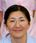
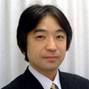

指定自立支援医療機関（育成医療・更生医療） 顎口腔機能診断医療機関

 理事長 茶谷竜仁
理事長 茶谷竜仁
父である茶谷仁史に代わって理事長に就任いたしました。皆様とのご相談とお話をしっかりさせて頂いて、最良の治療を目指したいと考えております。よろしくお願いいたします。
略歴
- 平成24年 北海道大学歯学部 卒業
- 同年 北海道大学歯学部矯正科 入局
- 同年 ユニ矯正歯科クリニックにて診療開始
- 平成28年 北海道大学大学院 卒業
- 北海道大学にて歯学博士号取得
- 日本矯正歯科学会会員
- 北海道矯正歯科学会会員
- 日本顎変形症学会会員
- 日本口蓋裂学会会員
- 日本口腔外科学会会員
阿部ふじ恵

子供2人のママさん矯正医。穏和な人柄でいつも笑顔(^^)。周りを暖かくしてくれます。当クリニックではみんなのお母さん的存在です。趣味は読書だそうです。
略歴
- 昭和 62年 北海道大学歯学部 卒業
- 同年 北海道大学歯学部矯正科 入局
- 平成 2年 ユニ矯正歯科クリニックに勤務
- 北海道矯正歯科学会会員
古谷忠典
一般歯科全般の治療もできるオールラウンダー。複数の診療所で治療を行っており、当院では顎変形症と顎関節症の治療を特に担当しています。小学生の頃よりコンピュータを弄っており、組み立て、修理、プログラミングもこなします。
略歴
- 平成 6年 東京歯科大学歯学部 卒業
- 同年 北海道大学歯学部矯正科 入局
- 平成 7年 ユニ矯正歯科クリニックにて診療開始
- 平成11年 北海道大学大学院 卒業
- 北海道大学にて歯学博士号取得
- 日本矯正歯科学会認定医
- 北海道矯正歯科学会会員
- 日本顎変形症学会会員
- 日本口蓋裂学会会員
- 日本口腔外科学会会員
- 日本顎関節症学会会員
- Roth & Willium Study Club会員
元理事長 茶谷仁史

40年間、矯正治療に携わりました。従来の治療に加え、コーンビームCTという顎顔面に特化したCTをクリニックに導入し、気道や顎関節を含めた三次元的診断や、外科矯正治療の手術シュミレーションの実践の先駆けとして活躍しておりました。
略歴
- 昭和58年 北海道大学歯学部 卒業
- 同年 北海道大学歯学部矯正科 入局
- 昭和60年 北海道大学歯学部 助手
- 昭和64年 札幌市西区琴似にてユニ矯正歯科クリニック開業
- 令和４年 死去
- 北海道大学にて歯学博士号取得
- 日本矯正歯科学会専門医
- 北海道矯正歯科学会元副会長
- 日本臨床矯正医会元役員
- 日本顎変形症学会元役員
- 日本口蓋裂学会会員
- 元Roth & Willium Study Club会員